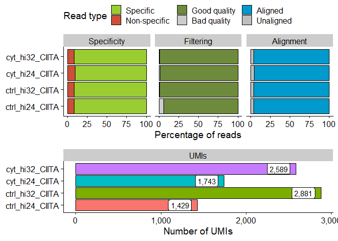
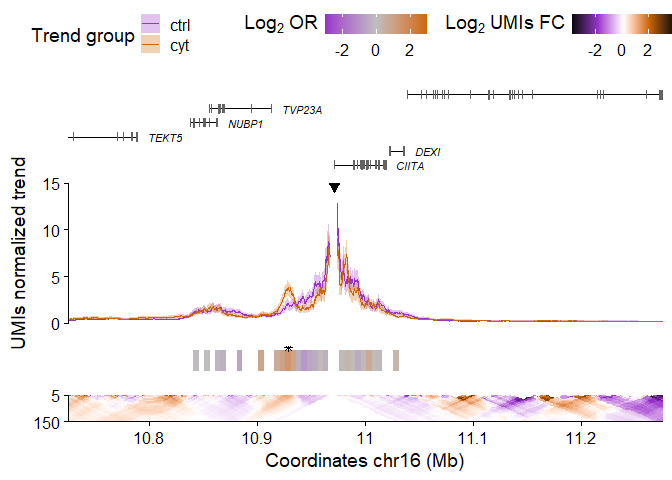

The goal of UMI4Cats is to provide and easy-to-use package to analyze UMI-4C contact data.
Installation
You can install the latest release of UMI4Cats from Bioconductor:
if (!requireNamespace("BiocManager", quietly = TRUE))
install.packages("BiocManager")
BiocManager::install("UMI4Cats")If you want to test the development version, you can install it from the github repository:
Now you can load the package using library(UMI4Cats).
Basic usage
## 0) Download example data ------------------------------- path <- downloadUMI4CexampleData() ## 1) Generate Digested genome ---------------------------- # The selected RE in this case is DpnII (|GATC), so the cut_pos is 0, and the res_enz "GATC". hg19_dpnii <- digestGenome( cut_pos = 0, res_enz = "GATC", name_RE = "DpnII", ref_gen = BSgenome.Hsapiens.UCSC.hg19::BSgenome.Hsapiens.UCSC.hg19, out_path = file.path(tempdir(), "digested_genome/") ) ## 2) Process UMI-4C fastq files -------------------------- raw_dir <- file.path(path, "CIITA", "fastq") contactsUMI4C( fastq_dir = raw_dir, wk_dir = file.path(path, "CIITA"), bait_seq = "GGACAAGCTCCCTGCAACTCA", bait_pad = "GGACTTGCA", res_enz = "GATC", cut_pos = 0, digested_genome = hg19_dpnii, bowtie_index = file.path(path, "ref_genome", "ucsc.hg19.chr16"), ref_gen = BSgenome.Hsapiens.UCSC.hg19::BSgenome.Hsapiens.UCSC.hg19, threads = 5 ) ## 3) Get filtering and alignment stats ------------------- statsUMI4C(wk_dir = file.path(path, "CIITA"))

## 4) Analyze UMI-4C results ------------------------------ # Load sample processed file paths files <- list.files(file.path(path, "CIITA", "count"), pattern = "*_counts.tsv", full.names = TRUE ) # Create colData including all relevant information colData <- data.frame( sampleID = gsub("_counts.tsv.gz", "", basename(files)), file = files, stringsAsFactors = FALSE ) library(tidyr) colData <- colData %>% separate(sampleID, into = c("condition", "replicate", "viewpoint"), remove = FALSE ) # Load UMI-4C data and generate UMI4C object umi <- makeUMI4C( colData = colData, viewpoint_name = "CIITA" ) ## 5) Perform differential test --------------------------- umi <- fisherUMI4C(umi, filter_low = 20 ) ## 6) Plot results ---------------------------------------- plotUMI4C(umi, ylim = c(0, 15), xlim = c(10.75e6, 11.25e6) )

Code of Conduct
Please note that the UMI4Cats project is released with a Contributor Code of Conduct. By contributing to this project, you agree to abide by its terms.